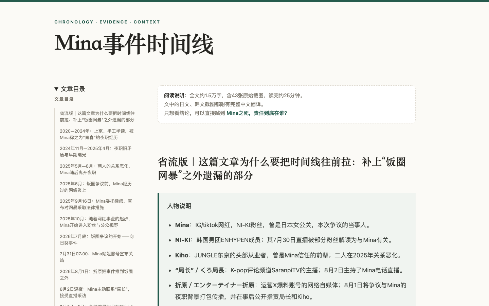

公开时间线共 15,219 字，收录 43 张原始截图及中文翻译；每个节点标注时间、来源与证据等级。

点击查看网页 ↗2026 年 8 月，相关事件在中文互联网持续传播，讨论材料分布于中文、日文和韩文平台。公开信息以截图、直播录屏、社交平台帖子和二手转述为主，缺少统一时间线与稳定来源。
项目需要解决四项信息问题：
项目目标为建立可检索、可追溯的公开记录，使每条主张均能对应时间、来源和证据等级。
| 等级 | 定义 | 使用方式 |
|---|---|---|
| A | 当事人原帖、直播录屏、平台页面、原始字幕 | 支撑事实节点 |
| B | 同期转发、引用与搜索缓存 | 证明当时的传播内容 |
| C | 当事人、亲友或主持人的事后陈述 | 标注陈述者与时间 |
| D | 来源不完整、匿名或仅有机器翻译的材料 | 独立存档，暂不进入结论 |
| 内容 | 数量 |
|---|---|
| 唯一帖子 ID | 272 条 |
| 涉及账号 | 191 个 |
| 原始截图 | 43 张，全部附中文翻译 |
| 事件节点目录 | 28 个 |
| 逐字材料 | 51 分钟直播字幕、约 3.1 万字采访全文 |
| 公开时间线 | 15,219 字 |
同一批材料按阅读需求拆分为五种形态：
| 产出 | 主要受众 | 功能 |
|---|---|---|
| 摘要长图 | 首次接触事件的读者 | 提供核心时间差与完整入口 |
| 短帖串文 | 社交平台用户 | 测试主题理解与反馈 |
| 完整文章 | 关注事件进展的读者 | 呈现主要论证 |
| 时间线网页 | 需要核查信息的读者 | 收录时间节点、证据等级和原始材料 |
| 内部审核文档 | 协作者与审核者 | 记录来源、争议点和待确认内容 |
初版长文发布后，外部触达有限。后续将长篇论证拆分为摘要、文章、时间线和审核文档，并将项目定位调整为可供查阅与二次创作的结构化材料。一次公开一手材料与初版前提冲突后，重新核查论证链并收窄结论范围。
项目发布后，结构化材料被多个账号用于短视频改编。以下为 2026 年 8 月下旬记录的六条抖音二次创作样本汇总。
以上数据来自二次创作账号，用于说明材料的后续使用情况，不计入个人账号传播成绩。
补充读者任务测试、来源失效监测与引用版本记录，降低材料删除和二次改写对长期可核查性的影响。